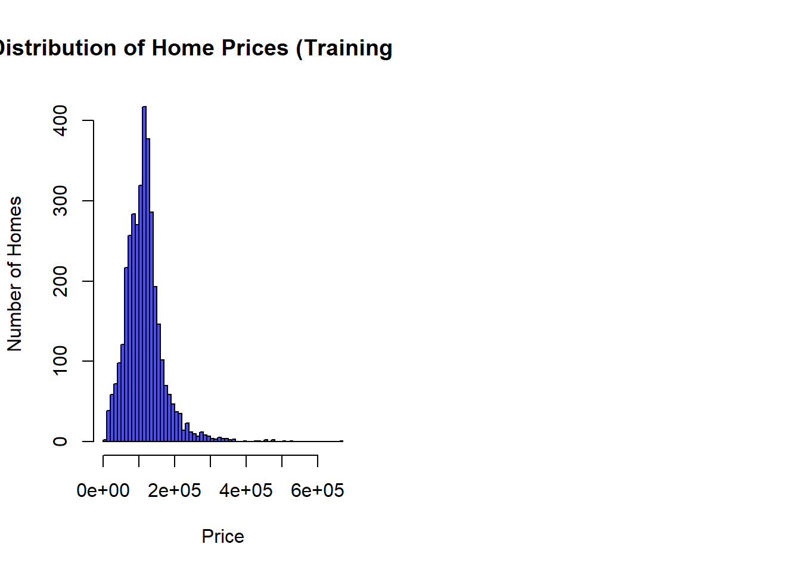
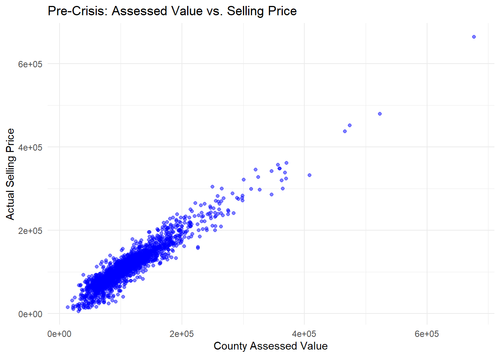
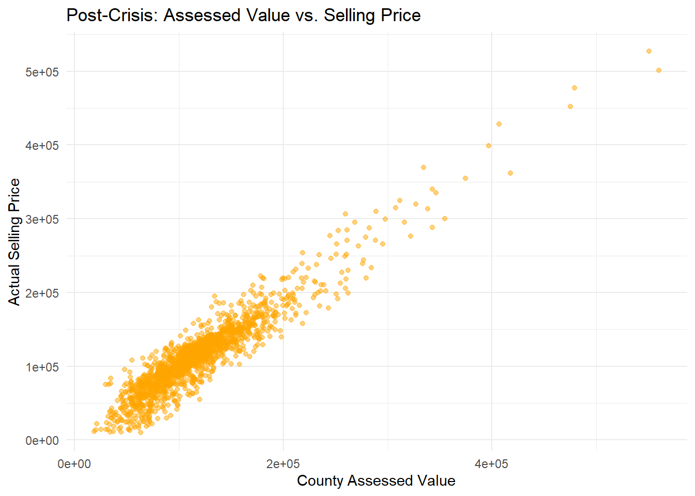

# read the datasets into R
library(knitr)
pre_crisis_data <- read.csv("PreCrisisCV.csv")
post_crisis_data <- read.csv("PostCrisisCV.csv")House Price Modeling and Bubbles
- Business Problem and Sub-Problems: Big-Picture Business Problem for LHBA- LHBA, a real estate firm, is encountering challenges optimizing home selling prices and streamlining the sales process.
Sub-Problems-
Pricing Strategy- How can LHBA determine the optimal selling price for homes in various markets? Sales Process Efficiency- How can LHBA streamline their sales process to reduce the time taken to sell homes? Market Analysis- How can LHBA identify and target potential buyers effectively in different market segments?
Follow-up Questions for LHBA Stakeholders- How do you currently determine the selling price for a home? Are there any challenges or limitations in this process? What are the primary obstacles you face in speeding up the home selling process? How do you categorize and target potential buyers? What criteria do you consider for different market segments?
Translating Business Problem into Analytics Problem- Analytics Problem- Develop a predictive model to estimate optimal home selling prices based on various factors, identify bottlenecks in the sales process, and segment potential buyers more accurately to enhance sales efficiency.
Connection to Decision-Making and Value of Data Science- Implementing predictive models to estimate optimal selling prices and streamlining the sales process through data-driven strategies can lead to better decision-making in pricing and resource allocation. Improved accuracy in pricing and faster sales cycles could significantly enhance LHBA’s competitive edge and profitability.
# Calculate the county-assessed values for both datasets
pre_crisis_data$AssessedValue <- pre_crisis_data$LandValue + pre_crisis_data$BuildingValue
post_crisis_data$AssessedValue <- post_crisis_data$LandValue + post_crisis_data$BuildingValue# Compute the correlation between the assessed values and actual selling prices for both datasets
pre_crisis_correlation <- cor(pre_crisis_data$AssessedValue, pre_crisis_data$Price)
post_crisis_correlation <- cor(post_crisis_data$AssessedValue, post_crisis_data$Price)# Print the correlations
print(paste("Pre-Crisis Correlation:", pre_crisis_correlation))[1] "Pre-Crisis Correlation: 0.944644618734002"print(paste("Post-Crisis Correlation:", post_crisis_correlation))[1] "Post-Crisis Correlation: 0.939185647886532"Here is a histogram showing the distribution of home prices
# Load necessary libraries
library(ggplot2)
# Combine pre-crisis and post-crisis data for visualization
combined_prices <- c(pre_crisis_data$Price, post_crisis_data$Price)
# Plot histograms
par(mfrow=c(1, 2)) # Set up the plotting area for two plots side by side
# Histogram for training data (combined pre-crisis and post-crisis)
hist(combined_prices, breaks=50, col=rgb(0, 0, 1, 0.7), main="Distribution of Home Prices (Training Data)", xlab="Price", ylab="Number of Homes")
The correlation between county-assessed values and actual selling prices stands as follows:
Pre-Crisis: Approximately 0.9446 Post-Crisis: Approximately 0.9392
These high correlations strongly imply a robust linear relationship between county-assessed values and actual selling prices. It underscores the county-assessed values’ substantial role as a predictor of selling prices in both periods.
Despite the high correlations, there might still exist noticeable differences in absolute values, potentially impacting LHBA’s decision-making process.
To delve deeper, visualizing the relationship between county-assessed values and actual selling prices in both datasets through scatter plots could unveil discrepancies or patterns that might not be evident solely from correlation values. The plan involves visualizing the relationship between county-assessed values and actual selling prices for both the pre-crisis and post-crisis datasets. Through scatter plots, we aim to uncover any discrepancies or patterns that might not be readily discernible from correlation values alone.
# Load necessary libraries
library(ggplot2)
# Plotting scatter plot for Pre-Crisis data
ggplot(pre_crisis_data, aes(x=AssessedValue, y=Price)) +
geom_point(alpha=0.5, color="blue") +
theme_minimal() +
labs(title="Pre-Crisis: Assessed Value vs. Selling Price",
x="County Assessed Value",
y="Actual Selling Price")
# Plotting scatter plot for Post-Crisis data
ggplot(post_crisis_data, aes(x=AssessedValue, y=Price)) +
geom_point(alpha=0.5, color="orange") +
theme_minimal() +
labs(title="Post-Crisis: Assessed Value vs. Selling Price",
x="County Assessed Value",
y="Actual Selling Price")
The scatter plot portraying the post-crisis data, akin to the pre-crisis data, displays a robust positive linear correlation between county-assessed values and actual selling prices.
However, akin to the pre-crisis data, slight deviations are noticeable. This implies that while county-assessed values offer a solid overall estimate of selling prices, additional factors exert influence on the ultimate property selling price.
Given this observation, delving into other dataset features becomes imperative to identify elements impacting selling prices beyond county-assessed values. This exploration aims to construct a predictive model capable of encompassing these factors, potentially enhancing price prediction accuracy.
To uncover the most impactful features influencing selling prices, employing feature importance from a tree-based model such as Random Forest proves beneficial. Beginning with the pre-crisis data, leveraging the Random Forest model enables computation and visualization of feature importance scores, shedding light on critical predictors of selling prices.
# Load necessary libraries
# install.packages("randomForest")
library(randomForest)
# Features and target for pre-crisis data
X_pre_crisis <- pre_crisis_data[, -which(names(pre_crisis_data) %in% c("Price", "Property", "AssessedValue"))]
y_pre_crisis <- pre_crisis_data$Price
# Train a Random Forest model
rf_pre_crisis <- randomForest(X_pre_crisis, y_pre_crisis, ntree=100, importance=TRUE)
# Extract feature importance
feature_importance_pre_crisis <- importance(rf_pre_crisis)
# Sort features by importance
sorted_features_pre_crisis <- feature_importance_pre_crisis[order(-feature_importance_pre_crisis[, "IncNodePurity"]), "IncNodePurity"]
# Print the sorted features
print(sorted_features_pre_crisis)BuildingValue LandValue AboveSpace Fireplaces Baths
2.386892e+12 1.046847e+12 7.503514e+11 2.343326e+11 1.799506e+11
Age Car Acres AC Basement
1.529410e+11 1.467505e+11 1.015853e+11 9.256247e+10 8.583279e+10
PoorCondition Toilets GoodCondition Rooms Deck
8.402842e+10 6.168689e+10 4.546510e+10 4.475185e+10 4.131539e+10
Beds
3.797328e+10 The Random Forest model trained on the pre-crisis data unveils the following feature importance scores:
BuildingValue emerges as the most pivotal feature, wielding substantial influence over predictions. Following closely, LandValue stands as the second most influential feature, albeit with a notably lesser impact than BuildingValue.
Additional features like AboveSpace, Age, and Acres exhibit some influence on the selling price; however, their contributions pale in comparison to the top two influential features.
These findings emphasize that while county-assessed values, particularly BuildingValue, wield considerable influence in predicting selling prices, other features also hold significance in determining the ultimate price.
Moving forward, a parallel analysis on the post-crisis data will unveil potential alterations in influential features post the housing bubble burst.
# Features and target for post-crisis data
X_post_crisis <- post_crisis_data[, -which(names(post_crisis_data) %in% c("Price", "Property", "AssessedValue"))]
y_post_crisis <- post_crisis_data$Price
# Train a Random Forest model for post-crisis data
rf_post_crisis <- randomForest(X_post_crisis, y_post_crisis, ntree=100, importance=TRUE)
# Extract feature importance for post-crisis data
feature_importance_post_crisis <- importance(rf_post_crisis)
# Sort features by importance for post-crisis data
sorted_features_post_crisis <- feature_importance_post_crisis[order(-feature_importance_post_crisis[, "IncNodePurity"]), "IncNodePurity"]
# Print the sorted features for post-crisis data
print(sorted_features_post_crisis)BuildingValue LandValue AboveSpace Baths Age
2.319569e+12 8.433181e+11 5.029134e+11 1.375174e+11 1.369344e+11
Fireplaces AC Acres Deck Beds
1.127476e+11 9.165571e+10 7.996834e+10 7.835555e+10 6.251028e+10
Basement Toilets Car PoorCondition GoodCondition
5.421072e+10 5.280872e+10 4.573999e+10 4.005902e+10 3.107680e+10
Rooms
3.048641e+10 # Loading necessary libraries
# install.packages(c("randomForest", "dplyr", "tidyr", # "caret"))
library(randomForest)
library(dplyr)
Attaching package: 'dplyr'The following object is masked from 'package:randomForest':
combineThe following objects are masked from 'package:stats':
filter, lagThe following objects are masked from 'package:base':
intersect, setdiff, setequal, unionlibrary(tidyr)
library(caret)Loading required package: lattice# Combining the datasets
combined_data <- rbind(pre_crisis_data, post_crisis_data)
# Splitting the data into 70% training and 30% testing
set.seed(42)
splitIndex <- createDataPartition(combined_data$Price, p = 0.70, list = FALSE)
train_data <- combined_data[splitIndex,]
test_data <- combined_data[-splitIndex,]
# Training the Random Forest model
model_rf <- randomForest(Price ~ . - Property, data = train_data, ntree=100)
# Predicting on the test data
predictions <- predict(model_rf, test_data)
# Calculating MAE and RMSE
mae <- mean(abs(predictions - test_data$Price))
rmse <- sqrt(mean((predictions - test_data$Price)^2))
print(paste("Mean Absolute Error (MAE):", round(mae, 2)))[1] "Mean Absolute Error (MAE): 12777.06"print(paste("Root Mean Squared Error (RMSE):", round(rmse, 2)))[1] "Root Mean Squared Error (RMSE): 17016.76"Mean Absolute Error (MAE): This metric signifies the average absolute variance between the forecasted and actual home selling prices. A MAE value of $12777.06 suggests that, on average, the model’s predictions deviate by approximately $12777.06 from the actual selling prices. This offers insight into the average prediction inaccuracy in terms of real-dollar differences.
Root Mean Squared Error (RMSE): RMSE serves as a measure of the comprehensive prediction discrepancy, magnifying larger errors more prominently than smaller ones. An RMSE value of $17016.76 represents the square root of the average squared deviations between predicted and actual prices. Typically exceeding the MAE due to error squaring, the RMSE highlights a broader perspective of prediction inconsistency.
Implications for LHBA:
These prediction errors, as indicated by the MAE and RMSE, bear significance. If LHBA exclusively relied on this model for pricing decisions, they might encounter average discrepancies ranging from $12777.06 to $17016.76 in their price estimations.
Considering these substantial errors, LHBA must incorporate additional factors when determining pricing strategies. While the model offers a baseline estimate, expert judgment and market dynamics should strongly influence decision-making.
The model’s forecasts can serve as a starting point or reference; however, adjustments based on property-specific aspects, market dynamics, or expert insights are imperative.
Additionally, it’s crucial to note that the test dataset contained zero values for sale prices, implying the model predicted selling prices from scratch. This factor might contribute to the observed prediction errors.
Periodically retraining the model with updated data and continuous performance evaluation will be advantageous for LHBA. This practice ensures the model maintains accuracy and relevance as new data becomes available.